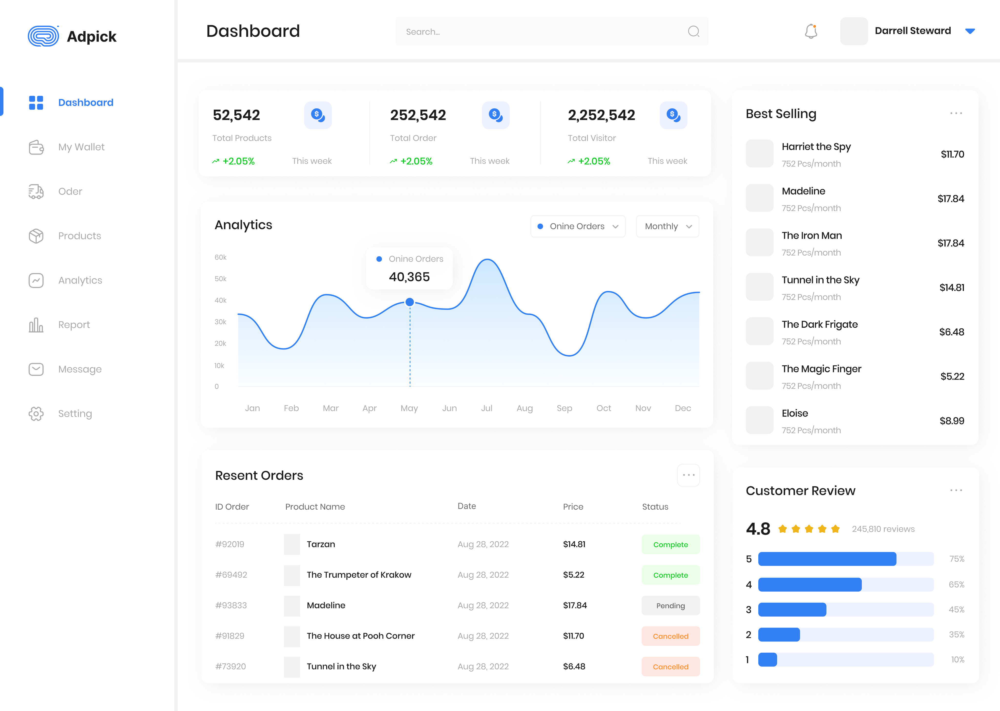

Power BI ile Stratejik Kararlar Alın: Güçlü Analitik, Anında Sonuçlar
Microsoft'un iş zekası platformu yazılımı Power BI, farklı veri kaynaklarından veri toplama, veri analizi yapma, etkileşimli görselleştirmeler oluşturma ve raporlama gibi çeşitli veri analitiği işlevlerini gerçekleştirmek için kullanılan bir iş zekası aracıdır.
Referanslar


Veri Yönetimini Kolaylaştırın
Power BI ile veri yönetimi artık daha kolay! Verilerinizi düzenleyebilir, erişimi kontrol edebilir ve veri ağını etkinleştirerek iş akışlarınızı optimize edebilirsiniz.
...
Power BI ile veri yönetimi artık daha kolay! Verilerinizi düzenleyebilir, erişimi kontrol edebilir ve veri ağını etkinleştirerek iş akışlarınızı optimize edebilirsiniz. İşletmenizin veri tabanlı karar alma süreçlerini güçlendirin ve rekabet avantajı elde edin. Bugün Power BI ile veri yönetimini optimize etmeye başlayın!
Kurumsal ve Bireysel İhtiyaçları Birleştirin
Power BI'nın self-servis hizmeti ile kurumsal ve bireysel ihtiyaçları bir araya getirin! Kurumsal ölçekte veri yönetimini sağlarken, ekipler arasında içgörülerin ve
...
Power BI'nın self-servis hizmeti ile kurumsal ve bireysel ihtiyaçları bir araya getirin! Kurumsal ölçekte veri yönetimini sağlarken, ekipler arasında içgörülerin ve yeniliklerin paylaşımını kolaylaştırın. İşletmenizin tüm paydaşlarına, veri tabanlı karar alma süreçlerine katılma imkanı sunarak, iş akışlarınızı daha verimli hale getirin. Hemen Power BI ile başlayarak, işletmenizin potansiyelini artırın!
Veri Deneyimlerini Her Yere Taşıyın
Power BI, Microsoft Teams, Microsoft 365 ve Dynamics 365 gibi yaygın kullanılan uygulamalarla entegre çalışarak veri deneyimlerini tüm platformlara yayın.
...
Power BI, Microsoft Teams, Microsoft 365 ve Dynamics 365 gibi yaygın kullanılan uygulamalarla entegre çalışarak veri deneyimlerini tüm platformlara yayın. İşletmenizin farklı ekipleri arasında sorunsuz veri paylaşımı ve işbirliği sağlayarak, veri odaklı bir iş kültürünü benimseyin. Herkesin kolayca erişebileceği güncel verilere dayalı kararlar alın ve iş süreçlerinizi optimize edin. Power BI ile veri deneyimlerinizi her yere taşıyın ve işletmenizin başarısını artırın!
Herkes İçin Kullanımı Kolay Veri Çalışması
Power BI, kullanıcı dostu bir arabirim ve ücretsiz eğitimlerle herkesin verilerle çalışmasını ve veri odaklı bir kültür oluşturmasını sağlar. İşletmenizdeki
...
Power BI, kullanıcı dostu bir arabirim ve ücretsiz eğitimlerle herkesin verilerle çalışmasını ve veri odaklı bir kültür oluşturmasını sağlar. İşletmenizdeki herkesin, verileri anlaması ve değerlendirmesi için gereken araçları sunar. Güçlü analitik yetenekler ve kolay kullanımıyla veri tabanlı karar alma süreçlerini güçlendirin. Bugün Power BI ile işletmenizin veri potansiyelini keşfedin ve veriye dayalı başarıya ulaşın!
Müşterileriniz İçin Özelleştirilebilir BI Raporları
Power BI ile BI raporlarınızı özelleştirerek, genişleterek ve uygulamalarınıza entegre ederek müşterilere hızlıca sunun ve pazara daha hızlı erişim sağlayın.
...
Power BI ile BI raporlarınızı özelleştirerek, genişleterek ve uygulamalarınıza entegre ederek müşterilere hızlıca sunun ve pazara daha hızlı erişim sağlayın. Müşterilerinize özel raporlar oluşturarak onların ihtiyaçlarını karşılayın ve veri tabanlı karar alma süreçlerine katılımlarını artırın. Güçlü analitik yeteneklerle donatılmış özelleştirilebilir raporlar ile müşterilerinizin memnuniyetini artırın. Hemen Power BI ile başlayarak, müşterileriniz için özel çözümler sunmaya başlayın!

Özellikler
Power BI'ın Özelliklerini Keşfedin
Power BI'nın çeşitli özelliklerini keşfedin ve verilerinizi interaktif raporlarla hayata geçirin!
Veri Kaynaklarıyla Esnek Bağlantı
Çeşitli veri kaynaklarına doğrudan bağlanabilme yeteneği.
Sunucular, bulut tabanlı depolama sistemleri, veri tabanları, dosya depoları ve çevrimdışı kaynaklarla uyumluluk.


Hızlı Veri Analizi
Veri keşfi, filtreleme, dönüştürme ve modellenme yetenekleri.
İleri seviye analiz araçları sayesinde derinlemesine veri analizi.
Verileri Anında Görselleştirin
Kolay kullanımı olan sürükle-bırak arayüzü ile görselleştirme.
Zengin grafikler, interaktif tablolar ve haritalar ile verilerin anlatımı.

Rapor Oluşturma ve Paylaşma Çeşitliliği
Özelleştirilebilir raporlar oluşturma ve paylaşma yeteneği.
Raporları sunmak için farklı paylaşım seçenekleri, içerisinde gömülü raporlar, e-posta gönderimi ve web tabanlı rapor görüntüleme.
Power BI'da Veri Güvenliği ve Uyumluluk
Veri güvenliği için çok katmanlı koruma ve izleme.
HIPAA, GDPR ve SOC 2 gibi önemli uyumluluk standartlarını destekleme.
Sıkça Sorulan Sorular
Power BI nedir ve nasıl çalışır?
Power BI, veri analizi ve görselleştirme platformudur. Veri kaynaklarından veri toplar, analiz eder, görselleştirir ve raporlar oluşturur.
Power BI'nın temel özellikleri nelerdir?
Veri bağlantısı, veri analizi, görselleştirme, raporlama, paylaşım ve güvenlik gibi temel özelliklere sahiptir.
Power BI raporlarını nasıl özelleştirebilirim?
Power BI içinde birçok özelleştirme seçeneği bulunur. Renkler, grafikler, filtreler ve kısıtlamalar gibi özellikleri kolayca özelleştirebilirsiniz.
Power BI raporlarını nasıl paylaşabilirim ve yayınlayabilirim?
Power BI üzerinden raporları paylaşabilir ve belirli kullanıcılara veya gruplara yayınlayabilirsiniz.
Power BI'nın güvenlik özellikleri nelerdir ve veri güvenliğimi nasıl sağlayabilirim?
Power BI, veri güvenliği için çeşitli önlemler sağlar. Rol tabanlı erişim kontrolü, veri şifreleme ve güvenlik duvarı gibi özellikler mevcuttur.
Power BI ile hangi veri kaynaklarına bağlanabilirim?
Power BI, çeşitli veri kaynaklarına bağlanabilir, bunlar arasında SQL Server, Excel, SharePoint, Salesforce ve Google Analytics gibi yaygın kullanılan veri kaynakları bulunur.
Power BI'nın diğer iş zekası araçlarından farkı nedir?
Power BI, kullanımı kolay arayüzü, zengin özellikleri ve Microsoft ekosistemi ile entegrasyonuyla diğer iş zekası araçlarından farklılaşır.